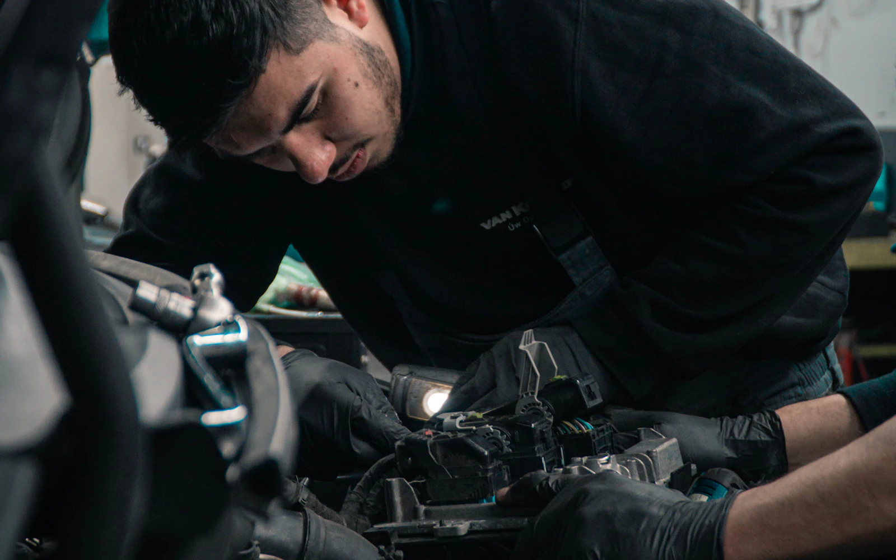

On a appelé des dizaines de garages belges. 8 sur 10 n'ont pas décroché.
Cet été, nous avons composé le numéro de dizaines de garages indépendants, partout en Belgique, aux heures d'ouverture, comme n'importe quel automobiliste. Pas pour vendre quoi que ce soit : pour savoir qui décroche. Voici les chiffres — et ce qu'ils veulent dire pour votre atelier.

Sommaire
Ce qu'on a fait, exactement
La méthode tient en trois lignes. Nous avons pris des garages indépendants — région bruxelloise, Wallonie, quelques adresses en Flandre — et nous les avons appelés en pleine journée, en semaine, entre 9 h et 17 h. Un seul appel par garage, depuis un GSM ordinaire, sans numéro masqué.
Quand quelqu'un décrochait, nous nous excusions d'avoir composé un mauvais numéro, et c'était terminé. Quand personne ne décrochait, nous notions : nombre de sonneries, messagerie ou pas, possibilité de laisser un message ou pas, rappel dans les 24 heures ou pas.
Honnêteté de méthode : quelques dizaines d'appels, ce n'est pas une étude statistique, c'est un sondage de terrain. Nous ne publions pas de décimales. Mais quand un résultat est aussi tranché, la marge d'erreur ne change pas la conclusion — et vous pouvez refaire le test vous-même en une heure.
Le résultat : 80 % d'appels sans réponse
Huit appels sur dix n'ont jamais atteint un être humain. Dans le détail : la plupart ont sonné dans le vide jusqu'au bout ; une partie est tombée sur une messagerie — souvent celle de l'opérateur, jamais configurée, parfois saturée ; quelques lignes sonnaient occupé.
Le chiffre qui nous a le plus marqués n'est pourtant pas celui-là. C'est l'absence de rappel. Logique : sans message, pas de rappel possible. Mais mettez-vous une seconde à la place de l'automobiliste. Pour lui, ce garage n'a simplement pas répondu — et il ne saura jamais que vous étiez sous un pont, en train de faire votre métier.
Pourquoi personne ne décroche — et pourquoi ce n'est la faute de personne
Ce 80 % ne dit pas que les garagistes travaillent mal. Il dit exactement le contraire : ils travaillent trop pour pouvoir décrocher. Déroulez une journée d'atelier ordinaire. À 8 h, les clients déposent leurs véhicules et veulent chacun deux minutes d'explication. À 9 h, vous êtes sous le premier pont ; le téléphone, lui, est au bureau, à quinze mètres et une porte de là. Vos mains sont grasses — l'écran ne s'en remettrait pas. Au comptoir, quelqu'un attend sa facture pendant qu'un fournisseur patiente sur l'autre ligne.
Dans un garage, tout le monde a un métier : mécanicien, carrossier, réceptionnaire quand il y en a un, patron qui fait souvent les trois. Répondre au téléphone n'est le métier de personne. Et embaucher quelqu'un pour ça coûte un salaire complet, charges comprises — hors de portée de la plupart des ateliers indépendants. Le téléphone sonne donc dans le vide, non par négligence, mais par arbitrage : la voiture sur le pont gagne toujours.
Ce qu'un appel manqué coûte vraiment
Qui appelle un garage à 10 h un mardi ? Pas des robots : des clients. Soit quelqu'un qui veut un créneau — entretien, pneus, passage avant le contrôle technique —, soit quelqu'un qui a un problème : un voyant allumé, une voiture qui ne démarre plus, une panne sur la route.
Faites les comptes avec vos propres prix. Une vidange avec filtre : autour de 150 €. Un entretien complet : 300 à 500 €. Plaquettes et disques : le même ordre. Une distribution, un embrayage, une boîte : on dépasse le millier d'euros, parfois trois. Et derrière la première facture, il y a la suite — un automobiliste satisfait revient chaque année, et amène la voiture de sa compagne.
Un appel manqué n'est donc pas une gêne : c'est une intervention qui part ailleurs. Il en suffit d'un par jour pour que le manque à gagner du mois dépasse, de loin, le coût de n'importe quelle permanence téléphonique.
« Ils rappelleront » — non, ils ne rappellent pas
C'est l'objection qu'on entend à chaque fois, et elle était sans doute vraie quand votre garage était le seul à dix kilomètres. Votre client de 2026 a Google ouvert devant lui : la carte affiche six ateliers à moins d'un quart d'heure, chacun avec son numéro. S'il tombe sur votre messagerie, il ne laisse pas de message — il appuie sur le numéro suivant.
Les études sur la réactivité commerciale convergent vers cet ordre de grandeur : environ trois clients sur quatre restent chez le premier qui répond. Pour un dépannage, c'est encore plus brutal. L'automobiliste au bord de la route appelle en boucle, dans l'ordre de la liste, et le premier qui décroche prend le remorquage — puis la réparation, puis le client.
Trois façons de récupérer ces appels
Si vous tenez un atelier, vous avez trois options réalistes.
- Embaucher à l'accueil. La meilleure expérience client, et la plus chère : un salaire complet pour un poste qui ne sert qu'aux heures d'ouverture. Rentable pour les grosses structures, rarement pour un indépendant.
- Un télésecrétariat classique. Des opérateurs humains répondent à votre place et prennent des messages, facturés à l'appel. C'est déjà mieux que la messagerie. Limite : ils ne connaissent ni vos ponts, ni vos durées, ni votre agenda — ils notent, vous rappelez, le travail est fait deux fois.
- Une réceptionniste IA. Elle décroche en quelques secondes, 24 h/24, connaît vos prestations et votre planning, réserve les rendez-vous d'atelier pendant l'appel et transfère les urgences directement sur votre mobile. Coût mensuel fixe, pas de salaire.
La troisième option, c'est ce que nous construisons : elle s'appelle Janet, et voici en détail ce qu'elle fait pour un garage. Soyons transparents — Celya vend cette solution, cet article n'est donc pas neutre. Le test du début, en revanche, l'est complètement : refaites-le. Appelez dix garages autour de chez vous, un mardi à 10 h, et comptez ceux qui décrochent.
Ce qu'il faut retenir
- En pleine journée, 80 % des garages que nous avons appelés n'ont pas décroché — et n'ont pas rappelé.
- Ce n'est pas un manque de sérieux : dans un atelier, répondre au téléphone n'est le métier de personne.
- Chaque appel entrant met en jeu 300 à 3 000 € de travail, plus la valeur du client qui revient.
- Un client sans réponse ne rappelle pas : il appelle le garage suivant sur la carte.
- La vraie question n'est pas « qui décroche ? », mais « que se passe-t-il quand je ne peux pas décrocher ? ». Si la réponse est « rien », vous payez déjà — sans le voir.
Écoutez ce que vos clients pourraient entendre
Janet décroche en quelques secondes, en français et en néerlandais. C'est une IA, elle le dit elle-même. Appelez-la, jugez sur pièce.
+32 460 25 44 13. Elle décroche en quelques secondes.
← Tous les articles Le secrétariat téléphonique pour garages → Les réservations par téléphone en restaurant →